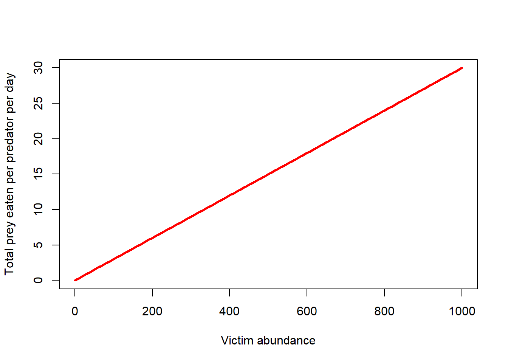
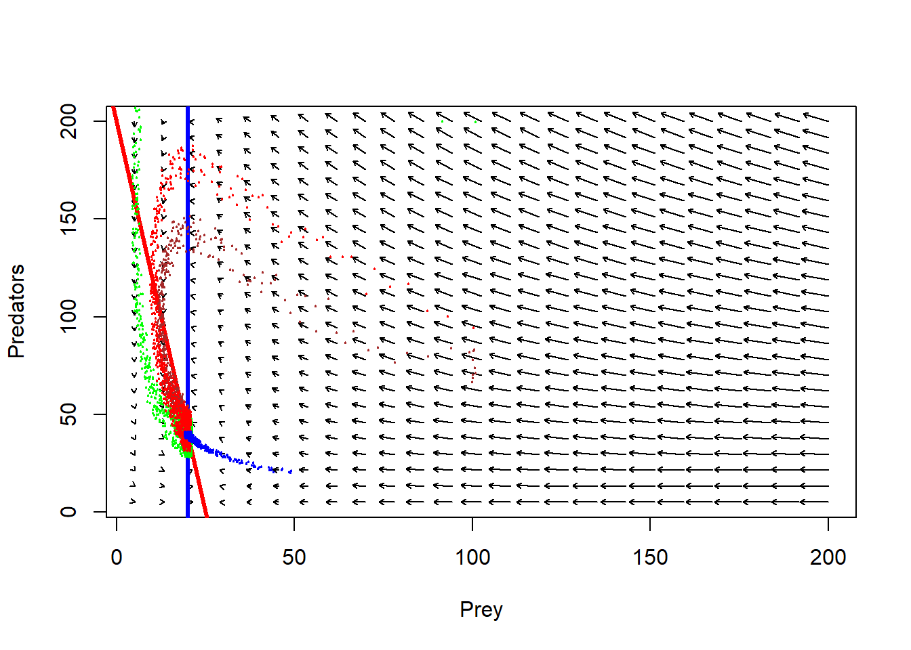

Species interactions: prey-predator!
NRES 470/670
Spring 2023
Predation


In the case of competition, we saw that each species negatively influenced the other. In the case of prey-predator interactions, one of the two actors benefits greatly from the interaction – and the other actor loses out!
Nearly all prey-predator models, even the most state-of-the-art, complex ones, share this common framework:
\(\Delta V = rV^* - f(V) \cdot P\)
AND
\(\Delta P = f(V)*conversion\space factor \cdot P - qP^*\)
Where
\(V\) is the total prey abundance (V for victims!), and
\(P\) is the total predator abundance, and
\(rV^*\) represents the growth of the prey population in the absence of predators – usually, this is some form of the standard single-species population growth models we have considered throughout most of this course (possibly density-dependent),
\(-qP^*\) represents the growth of the predator population in the absence of prey – usually this is simply exponential decline!,
AND
\(f(V)\) is known as the functional response – that is, the per-capita rate of prey consumption, usually a function of just the density (availability) of prey, but sometimes a function of both predator and prey densities (\(f(V,P)\)).
AND
\(f(V)\cdot conversion\space factor\) (alternatively represented as \(g(V)\)) is known as the numerical response – that is, the increase in per-capita predator population growth due to prey consumption.
There are many different types of possible functional and numerical response curves. Let’s start simple!
The classical prey-predator model
Let’s look at predation mathematically, starting with the simplest possible model…
The victims…
We will consider the prey, or “victims” first:
In the absence of predators, let’s assume that the victim population grows according to the basic exponential growth equation:
\(\Delta V = rV\)
We will assume that the intrinsic rate of growth, \(r\), is positive! In the absence of predators, the population grows exponentially.
If predators are present, the population growth of the victims will slow down…
What expression could define the rate at which prey are consumed by predators?
First of all, let’s assume that predators and prey walk randomly through their common environment, bumping into each other randomly. Every time the predator bumps into a prey item, the predator has some chance of consuming that prey item.
This is analogous to molecules moving randomly in a solution, occasionally causing reactions whenever they bump into other molecule(s) in the right way.
Under such circumstances, the predators do NOT interfere with one another and never get full. Each predator consumes a fixed number of prey in a given time period, depending only on prey availability.
Consider the case where there are \(V\) prey and only a single predator in a hypothetical prey-predator system.
Q: Imagine there are 100 prey and only one predator. A total of 3 prey are consumed in a single day. What is the daily rate of prey consumption per predator in this example (\(\alpha\))?
In this case, 3% (0.03) of prey are successfully encountered and consumed by the predator each day. If there were 1000 prey on the landscape, the predator would catch and consume 30 prey. And if there were 1 million prey, the predator would catch and consume 30,000 prey per day. (realistic?)
Q what is the shape of the functional response in this case?
\(f(V)=\alpha \cdot V\)
# simple functional response
LVfuncresp <- function(V,alpha){
alpha*V
}
curve(LVfuncresp(x,0.03),0,200,xlab="Victim abundance",ylab="Total prey eaten per predator",col="red",lwd=3)
…Of course, this alpha term has a different meaning from the alpha in the L-V competition models! Sorry but you can thank Alfred Lotka for that!
Now consider the case where there is more than one predator – that is, there are \(P\) predators and there are \(V\) prey. Recall that each predator has no influence on the consumption rates of other predators. The predators are just like molecules randomly bumping into prey molecules.
The total rate of predation now is:
\(f(V) \cdot P = \alpha VP\)
Does this make sense?
The term \(\alpha\) is sometimes referred to as capture efficiency. Does this make sense?
Now, the (instantaneous) prey growth rate can be defined by the following equation:
\(\Delta V = rV - \alpha VP\)
In the absence of predators, the prey population grows exponentially. However, with enough predators on the landscape, the population will decline.
This model is one half of what is known as the Lotka-Volterra prey-predator model.
The other half is the predator population growth model, of course!!
The predators…
In the absence of prey, let’s assume that the predator population grows just how we might imagine it grows- BADLY!
In the absence of prey, the predator population declines exponentially.
\(\Delta P = -qP\)
If enough prey are present, the population growth rate of the predators will go up…
Recall that (in this simple model) predators and prey walk randomly through their common environment, bumping into each other randomly. Each predator consumes a fixed percentage of the prey population. That is, the functional response is:
\(f(V) = \alpha V\)
The numerical response is the increase in the fractional growth rate of predators per unit prey consumed. The numerical response is related to the functional response. While the functional response describes the prey consumption rate per predator, the numerical response describes how that prey consumption translates into the growth of the predator population.
\(g(V) = some.function(f(V))\)
The simplest numerical response is that predator population growth increases as a linear function of per-capita prey consumption:
\(g(V) = \gamma (\alpha \cdot V)\)
Where \(\gamma\) is sometimes referred to as ‘conversion efficiency’ and \(\alpha\) is the capture efficiency and \(\alpha \cdot V\) is the total prey consumed per predator.
Or, since two constants multiplied together results in another constant:
\(g(V)=\beta \cdot V\)
Q what is the shape of the numerical response in this case?
# Numerical response
LVnumresp <- function(V,beta){
beta*V
}
curve(LVnumresp(x,0.001),0,200,xlab="Victim abundance",ylab="Increase in r for predator population",col="blue",lwd=3)The increase in total predators due to prey consumption now is:
\(g(V) \cdot P = \beta \cdot V \cdot P\)
Does this make sense?
Now, the (instantaneous) PREDATOR growth rate can be defined by the following equation:
\(\Delta P = \beta VP - qP\)
This model is the other half of what is known as the Lotka-Volterra prey-predator model.
Taken together, the model can be described as follows:
\(\Delta P = \beta VP - qP\)
\(\Delta V = rV - \alpha VP\)
L-V predation model in InsightMaker
Before we go deeper into predation modeling, let’s simulate prey and predator population growth under the L-V predation model.
Step 1: First, clone this Insight, which provides the skeleton for a basic prey-predator model
Step 2: Correctly set up the equations for the variables “functional response”” and “numerical response”.
Step 3: Correctly set up the flow equations for “total prey consumed” and “predator growth”, which refer to the the prey lost and the predators gained per time step, respectively.
Step 4: In the settings menu, change the simulation length to 200 and make sure that your analysis algorithm is set to “Accurate (RK4)” (this makes InsightMaker behave more like a continuous growth model).
Step 5: Set the Initial abundance of prey and predators to 100 and 50, respectively. Set the alpha and beta terms to 0.001, and set the r_prey and q_pred terms to 0.1. Run the model and visualize the time series for prey and predators.
Q What happens if you change the initial abundances?
Q What happens if you change initial abundance of both species to 100? Is this an equilibrium? If so, is it stable?
Step 6: Try some other parameter values for alpha, beta, r, and q…
Q Does the prey or predator ever go extinct?
Q Can you find some settings that make very slow oscillations?
Q Can you find some settings that make very fast oscillations?
Q Can you find some settings that make very shallow oscillations?
Prey-Predator models on the phase plane!
If you want to follow along in R, click here for the R script!
# LOTKA VOLTERRA PREDATION EXAMPLE (on phase plane)
## Params
Alpha <- 0.001
Beta <- 0.001
InitPrey <- 100
InitPred <- 75
r <- 0.1
q <- 0.1
Nyears <- 100
step <- 0.1
System <- data.frame(prey = rep(InitPrey,(Nyears+1)*10),pred = InitPred)
doYear <- function(prevyear){
n1 <- prevyear[1] + r*prevyear[1]*step - Alpha*prevyear[1]*prevyear[2]*step
n2 <- prevyear[2] + Beta*prevyear[1]*prevyear[2]*step - q*prevyear[2]*step
return(c(n1,n2))
}
## Do simulation
for(i in 1:(Nyears*10+1)){
System[1+i,] <- doYear(System[i,])
}Now let’s visualize this basic L-V system in phase space:
plot(1,1,pch="",ylim=c(0,200),xlim=c(0,200),xlab="prey",ylab="predators")
points(System[seq(1,1000,10),],col="green",type="p",pch=20,cex=0.85)
points(System[1,],col="blue",pch=20,cex=3)
Okay, so as prey get more abundant, predators start increasing, but as predators increase, prey abundance goes down. And repeat!
Here is another example…
# LOTKA VOLTERRA PREDATION EXAMPLE
## Params
Alpha <- 0.005
Beta <- 0.005
InitPrey <- 100
InitPred <- 75
r <- 0.2
q <- 0.1
Nyears <- 100
step <- 0.1
System <- data.frame(prey = rep(InitPrey,(Nyears+1)*10),pred = InitPred)
doYear <- function(prevyear){
n1 <- prevyear[1] + r*prevyear[1]*step - Alpha*prevyear[1]*prevyear[2]*step
n2 <- prevyear[2] + Beta*prevyear[1]*prevyear[2]*step - q*prevyear[2]*step
return(c(n1,n2))
}
## Do simulation
for(i in 1:(Nyears*10+1)){
System[1+i,] <- doYear(System[i,])
}
plot(1,1,pch="",ylim=c(0,200),xlim=c(0,200),xlab="prey",ylab="predators")
points(System[seq(1,1000,10),],col="green",type="p",pch=20,cex=0.85)
points(System[1,],col="blue",pch=20,cex=3)
With some jittering, we can visualize the amount of time the system spends in various parts of phase space…
plot(1,1,pch="",ylim=c(0,200),xlim=c(0,200),xlab="Prey",ylab="Predators")
points(jitter(System[,1],200),jitter(System[,2],200),col="brown",pch=20,cex=0.3)#abline(h=K2,v=K1,col="gray",lwd=2,lty=2)You can see that this system spends much more time near the origin, where abundances are low for both prey and predator!
Finally, let’s consider multiple starting points and see how the system behaves!
## LOTKA VOLTERRA PREDATION EXAMPLE
## Params
InitN1 <- 120
InitN2 <- 25
System1 <- data.frame(n1 = rep(InitN1,(Nyears*10+1)),n2 = InitN2)
## Do simulation
for(i in 1:(Nyears*10+1)){
System1[1+i,] <- doYear(System1[i,])
}
InitN1 <- 200
InitN2 <- 100
System2 <- data.frame(n1 = rep(InitN1,(Nyears*10+1)),n2 = InitN2)
## Do simulation
for(i in 1:(Nyears*10+1)){
System2[1+i,] <- doYear(System2[i,])
}
InitN1 <- 50
InitN2 <- 200
System3 <- data.frame(n1 = rep(InitN1,(Nyears*10+1)),n2 = InitN2)
## Do simulation
for(i in 1:(Nyears*10+1)){
System3[1+i,] <- doYear(System3[i,])
}Now, phase space looks like this (with jittering to indicate concentration of points:
plot(1,1,pch="",ylim=c(0,400),xlim=c(0,400),xlab="species 1",ylab="species 2")
points(jitter(System[,1],500),jitter(System[,2],500),col="brown",pch=20,cex=0.3)
points(jitter(System1[,1],500),jitter(System1[,2],500),col="green",pch=20,cex=0.3)
points(jitter(System2[,1],500),jitter(System2[,2],500),col="red",pch=20,cex=0.3)
points(jitter(System3[,1],500),jitter(System3[,2],500),col="blue",pch=20,cex=0.3)
#abline(h=K2,v=K1,col="gray",lwd=2,lty=2)Q: Does this predator-prey system have a stable equilibrium?
Q: Does this predator-prey system have an equilibrium at all?
Q: How do these dynamics look like when visualized as time series?
plot(seq(1,100,length=nrow(System)), System[,1], xlab="Time", ylab="Abundance",type="l",col="orange",lwd=2,ylim=c(0,160),xlim=c(0,95))
points(seq(1,100,length=nrow(System)), System[,2], xlab="Time", ylab="Abundance",type="l",col="green",lwd=2,lty=2)
legend("top",lwd=c(2,2),lty=c(1,2),col=c("orange","green"),legend=c("prey","predator"),bty="n")
More with the L-V predator-prey phase space!
Just like before, let’s draw arrows throughout phase space, representing where the system would be expected to go from each point in phase space.
## SPECIFY MODEL AND INITIALIZE
#
## toggle switch function for phase arrow and nullcline plotting
toggle = compiler::cmpfun(function(u,v,parms) {
c( u*parms[1]-parms[2]*u*v, parms[3]*u*v-parms[4]*v )
})
fun=toggle ## Our generic name for the system of equations to look at! ;-)
#
## toggle switch function for computing solution trajectories with deSolve::ode()
#Toggle = as.ode.func(toggle)
#
## parameter values?
Alpha <- 0.005
Beta <- 0.005
r <- 0.2
q <- 0.1
parms=c(r,Alpha,Beta,q)
# toggle(100,100,parms)
xlim = c(5,200)
ylim = c(5,200)
new <- phasearrows.calc(toggle,xlim,ylim,resol=25,parms=parms)
plot(1,1,pch="",xlim=xlim,ylim=ylim,xlab="Prey",ylab="Predators")
phasearrows.draw(new)
#
## END MODEL SPECIFICATION AND INITIALIZATION
#######################################################################################Are there any other possible outcomes of this simple L-V model?
Well, let’s plot out the isoclines then!!
Isoclines!
Again, it can be helpful to plot out the isoclines in phase space – that is, the conditions under which the predator and prey populations do NOT grow!
If we set the L-V prey growth equation to zero, we find that the victim population is stable under the following conditions in phase space:
\(\hat{P} =\frac{r}{\alpha}\)
If we set the L-V predator equation to zero, we find that the predator population is stable under the following conditions in phase space:
\(\hat{V} =\frac{q}{\beta}\)
That is, the prey population is stable only if there are just enough predators to bump into (and subsequently eat up) any excess individuals produced each year
And the predator population is stable only if there are just enough prey to offset natural mortality.
Let’s visualize this in phase space.
plot(1,1,pch="",xlim=xlim,ylim=ylim,xlab="Prey",ylab="Predators")
phasearrows.draw(new)
abline(h=r/Alpha,col="red",lwd=3) # prey
abline(v=q/Beta,col="blue",lwd=3) # pred
Assumptions of the L-V prey-predator model
- Victim population is regulated only by predation
- Predator feeds only on one species of prey
- Individual predators can consume infinity prey items per time step theoretically
- No interference among predators
- Victims have no refuge from predators
More realistic prey-predator models
Let’s see what happens if we relax some of these assumptions!
- give the prey a carrying capacity!
- modify the functional response!
- add a refuge for prey!
- add a predator carrying capacity!
We can play around with these scenarios in InsightMaker. But it can be instructive to visualize in phase space first. For example, let’s incorporate a victim carrying capacity.
victim K in phase space
## SPECIFY MODEL AND INITIALIZE
#
## toggle switch function for phase arrow and nullcline plotting
toggle = compiler::cmpfun(function(u,v,parms) {
c( u*parms[1]-parms[2]*u*v - parms[3]*u^2, parms[4]*u*v-parms[5]*v )
})
fun=toggle ## Our generic name for the system of equations to look at! ;-)
#
## toggle switch function for computing solution trajectories with deSolve::ode()
#Toggle = as.ode.func(toggle)
#
## parameter values?
Alpha <- 0.001
Beta <- 0.005
r <- 0.2
q <- 0.1
c <- 0.008
parms=c(r,Alpha,c,Beta,q)
# toggle(100,100,parms)
xlim = c(5,200)
ylim = c(5,200)
new <- phasearrows.calc(toggle,xlim,ylim,resol=25,parms=parms)
plot(1,1,pch="",xlim=xlim,ylim=ylim,xlab="Prey",ylab="Predators")
phasearrows.draw(new)## Warning in arrows(c(x), c(y), c(x + dx * z1/((lens2) + 0.1)), c(y + dx * : zero-
## length arrow is of indeterminate angle and so skipped
#
## END MODEL SPECIFICATION AND INITIALIZATION
#######################################################################################Adding isoclines, it looks something like this:
plot(1,1,pch="",xlim=xlim,ylim=ylim,xlab="Prey",ylab="Predators")
phasearrows.draw(new)## Warning in arrows(c(x), c(y), c(x + dx * z1/((lens2) + 0.1)), c(y + dx * : zero-
## length arrow is of indeterminate angle and so skippedabline((r/Alpha),-(c/Alpha),col="red",lwd=3) # prey
abline(v=q/Beta,col="blue",lwd=3) # predFollow the arrows. What do you think the system dynamics will look like?
## Params
Alpha <- 0.001
Beta <- 0.005
r <- 0.2
q <- 0.1
c <- 0.008
InitPrey <- 100
InitPred <- 75
Nyears <- 100
step <- 0.1
System <- data.frame(prey = rep(InitPrey,(Nyears+1)*10),pred = InitPred)
doYear <- function(prevyear){
n1 <- prevyear[1] + r*prevyear[1]*step - Alpha*prevyear[1]*prevyear[2]*step - c*prevyear[1]^2*step
n2 <- prevyear[2] + Beta*prevyear[1]*prevyear[2]*step - q*prevyear[2]*step
return(c(n1,n2))
}
## Do simulation
for(i in 1:(Nyears*10+1)){
System[1+i,] <- doYear(System[i,])
}
##### LOTKA VOLTERRA PREDATION EXAMPLE
## Params
InitN1 <- 100
InitN2 <- 200
System1 <- data.frame(n1 = rep(InitN1,(Nyears*10+1)),n2 = InitN2)
## Do simulation
for(i in 1:(Nyears*10+1)){
System1[1+i,] <- doYear(System1[i,])
}
InitN1 <- 100
InitN2 <- 100
System2 <- data.frame(n1 = rep(InitN1,(Nyears*10+1)),n2 = InitN2)
## Do simulation
for(i in 1:(Nyears*10+1)){
System2[1+i,] <- doYear(System2[i,])
}
InitN1 <- 50
InitN2 <- 20
System3 <- data.frame(n1 = rep(InitN1,(Nyears*10+1)),n2 = InitN2)
## Do simulation
for(i in 1:(Nyears*10+1)){
System3[1+i,] <- doYear(System3[i,])
}
plot(1,1,pch="",xlim=xlim,ylim=ylim,xlab="Prey",ylab="Predators")
phasearrows.draw(new)## Warning in arrows(c(x), c(y), c(x + dx * z1/((lens2) + 0.1)), c(y + dx * : zero-
## length arrow is of indeterminate angle and so skippedabline((r/Alpha),-(c/Alpha),col="red",lwd=3) # prey
abline(v=q/Beta,col="blue",lwd=3) # pred
points(jitter(System[,1],500),jitter(System[,2],500),col="brown",pch=20,cex=0.3)
points(jitter(System1[,1],500),jitter(System1[,2],500),col="green",pch=20,cex=0.3)
points(jitter(System2[,1],500),jitter(System2[,2],500),col="red",pch=20,cex=0.3)
points(jitter(System3[,1],500),jitter(System3[,2],500),col="blue",pch=20,cex=0.3)
Now, does the system have a stable equilibrium???
Let’s visualize as a time series!
plot(seq(1,100,length=nrow(System)), System[,1], xlab="Time", ylab="Abundance",type="l",col="orange",lwd=2,ylim=c(0,160),xlim=c(0,95))
points(seq(1,100,length=nrow(System)), System[,2], xlab="Time", ylab="Abundance",type="l",col="green",lwd=2,lty=2)
legend("top",lwd=c(2,2),lty=c(1,2),col=c("orange","green"),legend=c("prey","predator"),bty="n")
Alternative functional responses
The L-V prey-predator model assumes that prey consumption per predator increases linearly with an increase in prey abundance. Following C.S. “Buzz” Holling, this is known as a “Type I” functional response.
The Type I functional response makes several unrealistic assumptions – for example, that predators never get full and stop eating!
As we have seen before, the type I functional response looks something like this!
\(f(V)=\alpha \cdot V\)
TypeIfuncresp <- function(V,alpha){
alpha*V
}
curve(TypeIfuncresp(x,0.1),0,500,xlab="Victim abundance",ylab="Total prey eaten per predator",col="red",lwd=3)
Type II functional response
The Type II functional response takes prey saturation into account- the predators will consume more prey with increasing prey densities, but only up to a point!
The type II functional response is described mathematically as:
\(f(V,P) = \frac{\alpha V}{1+\alpha hV}\),
where f(V,P) is the functional response (prey consumed per predator).
Similar to the Type I functional response, \(\alpha\) is the “attack rate” (rate at which predator-prey encounters increase as prey densities increase)
The new term, h, describes the handling time (average time a predator spends processing a single prey item).
The term h is probably best understood as the inverse of the maximum prey consumption rate!
Let’s visualize it!
TypeIIfuncresp <- function(V,alpha,h){
(alpha*V)/(1+alpha*h*V)
}
curve(TypeIIfuncresp(x,0.1,0.1),0,500,xlab="Victim abundance",ylab="Total prey eaten per predator",col="red",lwd=3)
Type III functional response
The Type III functional response takes predator learning into account- as prey become more abundant (relative to other potential prey) the predators will develop a search image and the capture efficiency will increase with increasing prey abundance up to a certain point.
Conversely, as prey densities get really low, predators will stop even bothering to look for the prey, so capture efficiency will be depressed.
The type III functional response can be described mathematically as:
\(f(V,P) = \frac{\alpha V}{1+\alpha hV}\),
where f(V,P) is the functional response (prey consumed per predator).
Similar to the Type I functional response, \(\alpha\) is the “attack rate” (rate at which a predator-prey encounters increase as prey densities increase)
The new term, h, describes the handling time (average time a predator spends processing a single prey item).
The term h is probably best understood as the inverse of the maximum prey consumption rate!
Let’s visualize it!
TypeIIIfuncresp <- function(V,alpha,h,k){
(alpha*V^k)/(1+alpha*h*V^k)
}
curve(TypeIIIfuncresp(x,0.0005,0.1,1.6),0,1000,xlab="Victim abundance",ylab="Total prey eaten per predator",col="red",lwd=3)
Final InsightMaker activity (on your own)!!
Step 1 Add prey density-dependence to your basic predator-prey model, using your knowledge of modeling density-dependence (or just use the equations in chapter 6 of the Gotelli book). Visualize the dynamics as time series and in phase space. Do you ever see oscillations with prey density dependence? Is this model more stable than the base L-V model?
Step 2 Change the functional response to a type-II functional response. Visualize the dynamics as time series and in phase space. Do you ever see oscillations with this model? Is this model more stable than the base L-V model?
Step 3 Change the model to account for prey refuges. That is, there is a segment of the prey population that is not accessible to predators. How does this change the system dynamics?
Step 4 Change the model to include a type II functional response AND prey density-dependence. How does this change the system dynamics? Is this system stable? Under what conditions?
Step 5 Evaluate the following statement (from the Gotelli Book):
“the more independent the predator and the prey are of one another, the more stable the interaction”